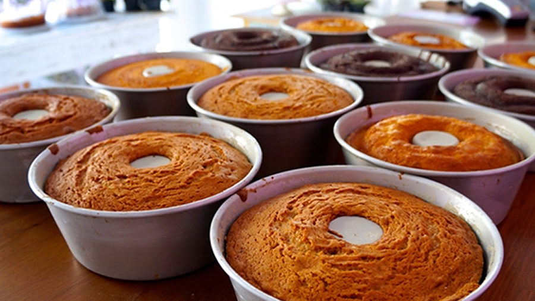

Enjoy our Homemade Cakes!
It's very difficult to find someone who can resist a good piece of cake, isn't it!? I have noticed that many people want to eat a delicious homemade cake, but don't know how to make it or don't have time to make a delicious cake. Homemade cake tends to awaken a nostalgic feeling in people, after all, many people have memories of childhood cakes made by their mothers and grandmothers. Homemade cakes are more popular than ever, so here I want to be able to make sure you can enjoy great cakes without having to go to the kitchen and thus be able to enjoy great flavors and delicious cakes.